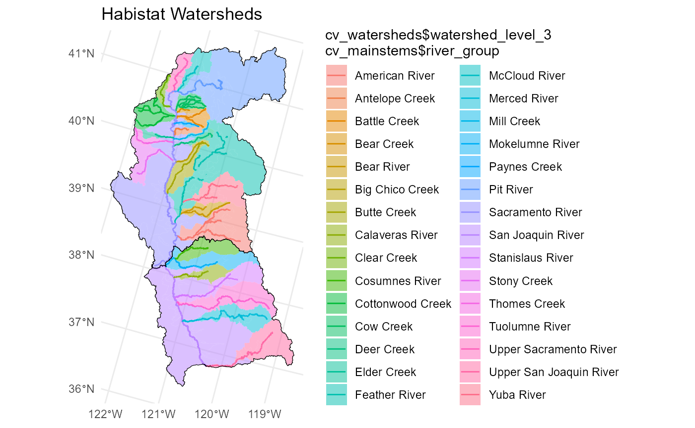

Reach-scale predictions are aggregated to the scale of the river (mainstem) reach or watershed for usability in decision support models and other applications. Aggregating reach-scale predictions across a river or watershed extent is more complicating than adding up habitat values at a given flow, because instantaneous flows at different points in the watershed differ. This article describes the delineation of watersheds and mainstems, as well as the method for aggregating reach-scale predictions.
The Central Valley Mainstems dataset cv_mainstems
contains joined flowlines and attributes for major habitat streams in
the Sacramento and San Joaquin Valleys. This dataset is derived from the
following sources.
Current habitat streams are derived primarily from the CVPIA
DSMHabitat Spawning and Rearing Habitat layer. This dataset
delineates spawning and rearing reach extents by run (Fall Run Chinook,
Spring Run Chinook, and Steelhead). For the habistat project, spawning
and rearing extents were mapped onto NHD ComID reaches. To create a
run-agnostic map of maximum potential spawning and rearing habitat
extents, reaches identified as spawning reaches for any run are labelled
as spawning reaches, and likewise for rearing. River names were modified
to distinguish different forks and tributaries within the same
watershed. (In the dataset, the river_group attribute
describes the watershed, e.g. Cottonwood Creek, while the
river_cvpia attribute describes the distinct river name,
e.g. North Fork Cottonwood Creek.)
Historic and potential habitat streams are mapped from the historical extents described by Yoshiyama et al. (2001)1 delineation. Naming conventions align with that described for the current habitat streams. Scope is presently limited to the Sacramento and San Joaquin basins and does not include the Tulare basin.
The Central Valley Watersheds dataset cv_watersheds
describes the drainage area associated with the mainstem groups.
Watersheds are grouped and dissolved based on USGS WBD subcatchment
polygons. Watershed names are nested hierarchically to make summary
statistics clearer.
watershed_level_1 distinguishes the Sacramento versus
San Joaquin basins.watershed_level_2 identifies catchments that flow
directly into the Sacramento and San Joaquin rivers.watershed_level_3 is the canonical watershed name that
aligns with the river_group attribute in the
cv_mainstems dataset.For example, the Yuba River watershed is:
watershed_level_1 = “Sacramento River”watershed_level_2 = “Feather River”watershed_level_3 = “Yuba River”while the Feather River watershed (not including the Yuba) is:
watershed_level_1 = “Sacramento River”watershed_level_2 = “Feather River”watershed_level_3 = “Feather River”The Upper Sacramento River and Upper San Joaquin River are treated as
distinct tributaries of the Sacramento River and San Joaquin River
respectively. They have their own river_group and
watershed_level_3 names.

Aggregating flow-to-suitable-area relationships from the individual
comid reach to the river- or watershed-scale is not as
simple as summing or averaging the curves. This is because, at a
particular point in time, flow is not the same at all points in the
river or watershed. For a river- or watershed-scale habitat curve, the
nominal “flow” is the flow at the downstream end of the river in
question, or the outlet point of the watershed. Habitat area for a given
flow is the sum of the habitat area at the outlet reach for that flow,
and all the habitat area upstream at whatever the corresponding
flows are.
When the nominal flow at the outlet is , the flow for some prediction point (comid) farther up in the watershed is assumed to be
where is the drainage area for the prediction point or outlet and is the mean annual precipitation for the prediction point or outlet.
Looking at habitat area is a function of flow
(),
the habitat area for the watershed
at nominal flow
is the sum of the habitat areas for individual points
(comids) at their respective corresponding
flows:
For calculating duration suitability at an individual prediction
point (comid), as described in Duration Analysis, the flow values on
the inundation duration curve are scaled from the streamgage to the
prediction point using an equivalent method.
Then, this scaled duration curve is applied to the
flow-to-suitable-area curve for the comid using the methods
described in Duration Analysis.
Finally, the duration-scaled flow-to-suitable-area curves for all
relevant comids within the watershed are aggregated using
the methods described above.
R. M. Yoshiyama, E. R. Gerstung, F. W. Fisher, and P. B. Moyle. (2001). Historic and present distribution of Chinook salmon in the central valley drainage of California. In R. L. Brown, editor, Fish Bulletin 179: Contributions to the biology of Central Valley salmonids., volume 1, pages 71– 176. California Department of Fish and Game, Sacramento, CA.↩︎